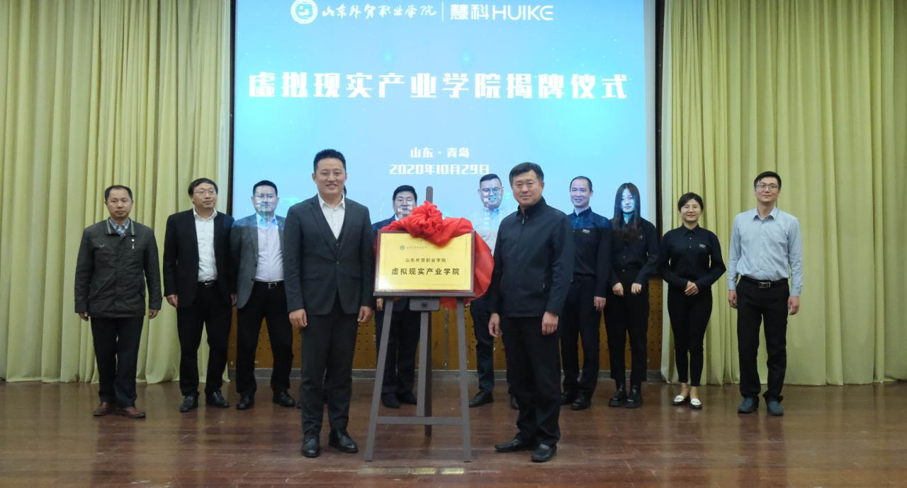
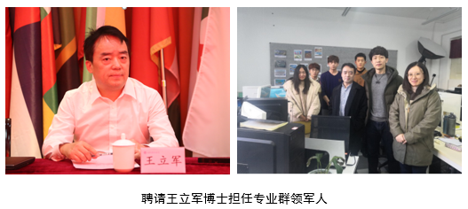
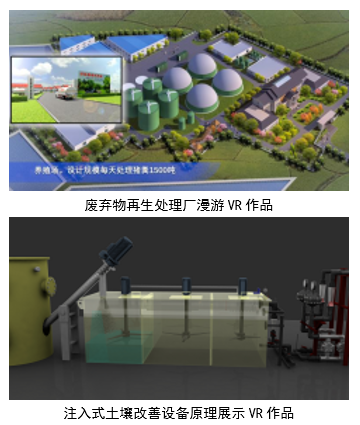
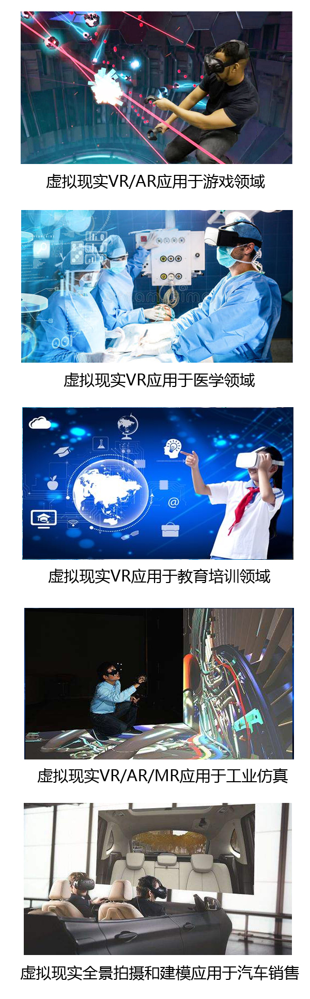

虚拟现实技术应用专业介绍
——学院与慧科教育科技集团共建专业。
青岛虚拟现实（Virtual Reality，缩写为VR）产业发展领跑全国，全国首个虚拟现实高新技术产业化基地落户崂山，挂牌运营虚拟现实/增强现实技术及应用国家级工程实验室，培育引进了北航青岛研究院等VR研发机构及企业80家，集聚了大量国内VR领域的高端科研机构和高层次人才，欲打造千亿产业群，急需要大量的虚拟现实开发人才。
聘请俄罗斯工程院外籍院士、梦幻世界科技集团董事长、北京邮电大学和北京科技大学客座教授王立军博士担任专业群领军人，指导虚拟现实技术应用专业建设，提供最前沿技术支持，为学生提供实习、就业岗位。
建有虚拟现实协同创新中心，提供虚拟现实项目开发服务，学生在工作室进行三维建模与动画制作、全景拍摄和虚拟现实交互开发等，完成江苏盱眙县畜禽废弃物再生处理厂VR漫游及动画展示、封龙战记大型手游项目场景建模、北京环保局注入式土壤改善设备VR原理展示等项目。
虚拟现实技术应用专业毕业生将就业到虚拟现实、增强现实设计或应用类企业，从事虚拟现实产品设计、手机游戏开发、虚拟引擎开发、全景漫游设计等岗位。
